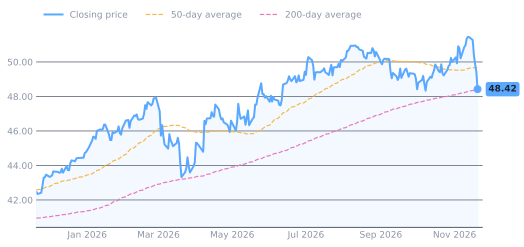
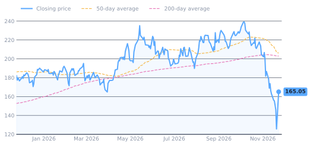
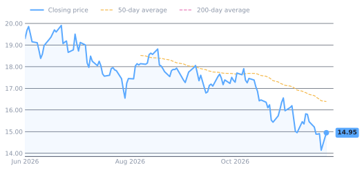

Market briefing
Closing prices up to Monday 23 November 2026. Generated on 24 November 2026 at 20:56.
Today in brief
Stocks rebounded sharply on Monday 23 November, with the S&P 500 up 4.73% and the Nasdaq Composite up 6.51%, after Nvidia reinstated Jensen Huang as chief executive and lifted AI and chip stocks worldwide. The bounce recovered only about half of last week's AI-led sell-off, and at least one chip strategist (Wolfe) has called it a possible semiconductor bear-market rally.
Written by an AI agent from news sources. Check the links below.
Watchlist
12 funds · 8 significant
AEX!+2.9σ
1,089.08 +2.15%
Why it moved
The AEX rose 2.15% to close at 1,089.07, recovering from a three-month low reached on Friday. Chip stocks led the advance, with BE Semiconductor up about 9% and ASML closing up nearly 10%, and technology, materials and industrial shares were the strongest sectors. ASML's heavy weight in the index likely explains much of the gain, which mirrors the global chip rebound triggered by Nvidia's news.
Sources: ad-hoc-news.de in.investing.com mlq.ai

Performance
Trend and valuation
S&P 500!+4.5σ
7,237.17 +4.73%
Why it moved
The index gained 4.73%, its strongest day since April 2025, and recovered just over half of the losses from the previous week. Nvidia, which accounts for roughly 6% of the index, was its single biggest catalyst. Rate expectations also shifted, with the 2-year Treasury yield rising as the rebound made a December Fed rate hike look more likely.

Performance
Trend and valuation
Vanguard FTSE Dev. Europe!+2.7σ
49.42 +2.07%
Why it moved
Not explained today: only the 5 largest moves get an AI explanation.

Performance
Trend and valuation
NVIDIA!+10.7σ
165.05 +31.48%
Why it moved
Nvidia's board brought co-founder Jensen Huang back as CEO and president with immediate effect, less than two weeks after he stepped down amid reports about his personal conduct, and the stock closed 31.48% higher on Monday, its best day since 2003. Melius, Bernstein and StoneX all upgraded the shares that day, which reinforced the rebound. Some investors remain cautious because of unresolved export-control scrutiny, espionage investigations and the possibility of US data-center limits.

Performance
Trend and valuation
C.D. Projekt Red S.A.!+2.1σ
269.10 +4.59%
Why it moved
Not explained today: only the 5 largest moves get an AI explanation.

Performance
Trend and valuation
Alphabet Inc.!+2.8σ
279.53 +5.88%
Why it moved
Not explained today: only the 5 largest moves get an AI explanation.

Performance
Trend and valuation
VanEck Electrification and Power Infrastructure!+3.1σ
14.95 +5.71%
Why it moved
No electrification-specific news surfaced for Monday, so the move most likely reflects the broad AI and chip rebound spilling over into power and grid equipment makers. Siemens closed about 4% higher in Frankfurt and Schneider Electric's US-listed shares rose about 4.5%, while Siemens Energy was reported up roughly 7%. The link between those holdings and the fund's 5.71% gain is inferred rather than confirmed by the sources.
Sources: morningstar.com stockinvest.us mlq.ai

Performance
Trend and valuation
VanEck Quantum Computing!+3.0σ
20.32 +6.17%
Why it moved
Quantum-computing shares rose alongside Nvidia and the wider tech rebound on Monday, with IonQ closing up about 12.6%, and Rigetti rose without any company-specific news of its own. IonQ is also linked to Nvidia through a planned quantum system at Nvidia's research centre, which investors may have read as supportive. The fund's 6.17% gain most likely reflects this sector-wide bounce, as the group recovered part of the roughly 10% Nasdaq drop of the previous week.
Sources: heygotrade.com finance.yahoo.com fool.com

Performance
Trend and valuation
Other funds
VanEck Defense
47.49 +2.10%

Performance
Trend and valuation
Avantium N.V.
1.63 +6.96%

Performance
Trend and valuation
Sif Holding N.V.
1.85 +3.81%

Performance
Trend and valuation
AnthropicNew listing · 3 days
87.64 -1.43%

Performance
Trend and valuation
A move is significant when it is at least 2 standard deviations (σ) away from the average daily move of the previous 60 trading days. YTD is the change since the last close of the previous year. Colours show the move on the last trading day: green is up, red is down. Data: Yahoo Finance. The explanations are written by an AI agent (claude-haiku-5-5) that searches the web; they can contain mistakes, so check the sources. This page explains what happened and is not investment advice.